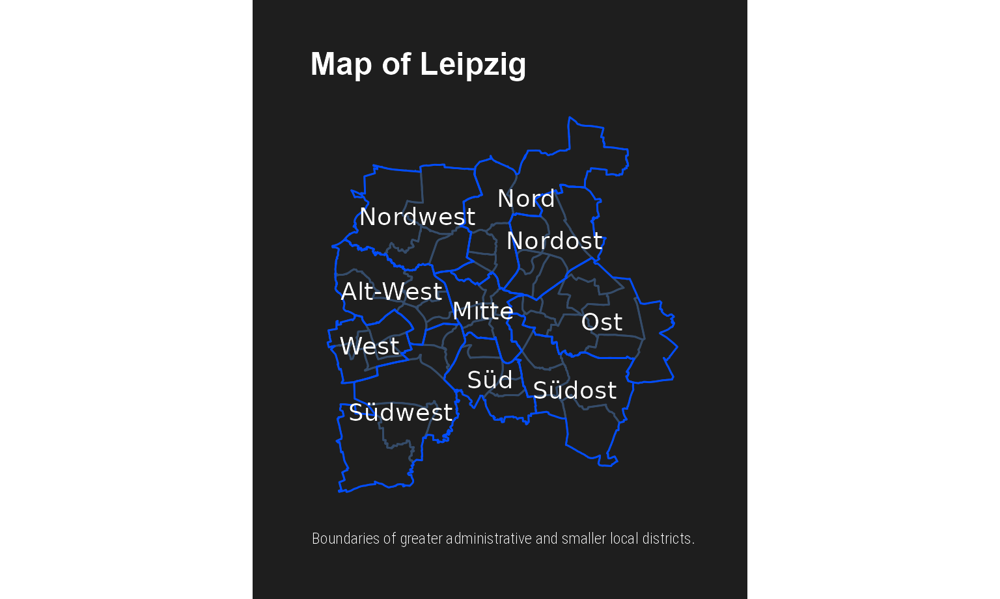

df.BZ <- get_lis_shapefile(shape = "Bezirke") #> Reading layer `sbz' from data source `/tmp/Rtmpfuq5OZ/file5e159562a6f61/sbz.shp' using driver `ESRI Shapefile' #> Simple feature collection with 10 features and 2 fields #> geometry type: POLYGON #> dimension: XY #> bbox: xmin: 307450.2 ymin: 5679890 xmax: 328773.4 ymax: 5702756 #> projected CRS: ETRS89 / UTM zone 33N df.OT <- get_lis_shapefile(shape = "Ortsteile") #> Reading layer `ot' from data source `/tmp/Rtmpfuq5OZ/file5e1593173319/ot.shp' using driver `ESRI Shapefile' #> Simple feature collection with 63 features and 2 fields #> geometry type: POLYGON #> dimension: XY #> bbox: xmin: 307450.2 ymin: 5679890 xmax: 328773.4 ymax: 5702756 #> projected CRS: ETRS89 / UTM zone 33N
bezirke <- cbind(df.BZ, st_coordinates(st_centroid(df.BZ))) ggplot() + geom_sf(data = df.OT, color = "#354C6A", fill = NA) + geom_sf(data = df.BZ, color = "#004CFF", fill = NA) + geom_text(data = bezirke, aes(X, Y, label = Name), size = 5, color = "white") + hrbrthemes::theme_modern_rc(base_family = "Arial") + theme( panel.grid.major = element_blank(), panel.grid.minor = element_blank(), axis.text.x = element_blank(), axis.text.y = element_blank() ) + labs( title = "Map of Leipzig", x = NULL, y = NULL, caption = "Boundaries of greater administrative and smaller local districts." )
